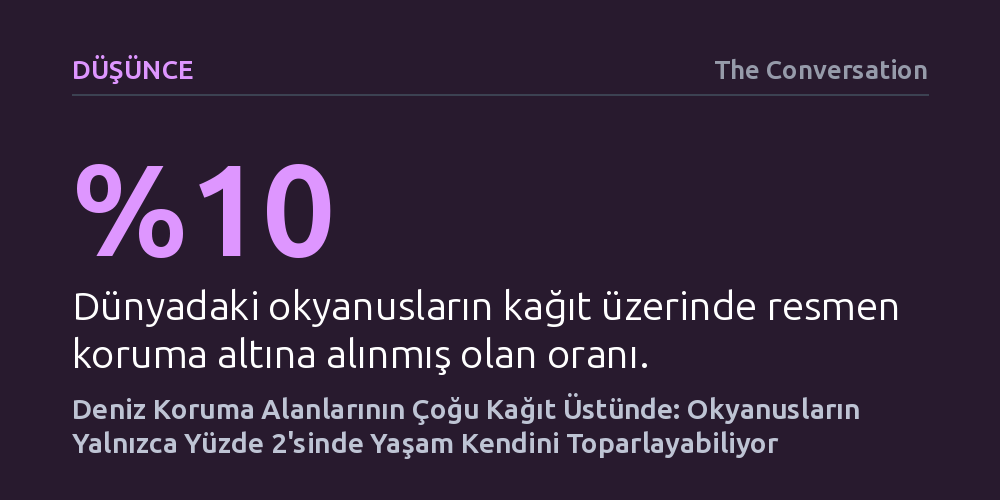

DUSUNCE · The Conversation · 2026-09-07
Dünya genelinde okyanusların yüzde 10'u koruma altında görünse de yeni sualtı verileri ekosistemlerin fiilen toparlandığı alanın yüzde 2'nin altında kaldığını gösteriyor. Korumadaki bu derin uçurumun başlıca sebebi, kağıt üstündeki avlanma yasaklarının pratikte uygulanamaması.
Uluslararası çevre hedeflerinin ve kağıt üzerindeki koruma alanlarının yüzölçümüne bakarak okyanusların kurtulduğunu varsaymanın büyük bir yanılsama olduğunu ortaya koyuyor.

Uzun yıllar boyunca okyanuslar, ne kadar avlanırsak avlanalım tükenmeyecek dipsiz bir kaynak gibi görüldü. Oysa günümüz gerçekleri bu kabulü tamamen çürüttü. Bugün dünya denizlerinin giderek artan bir kısmı aşırı avlanma baskısı altında. Balıkçılık filoları her zamankinden daha gelişmiş teknolojiler ve yoğun yöntemler kullansa da küresel olarak avlanan toplam balık miktarı artık artmıyor, belirli bir seviyede tıkanıp kalmış durumda. Denizlerde artık avlayacak kadar balık kalmadı; üstelik iklim krizine bağlı denizel sıcak dalgaları ve insan kaynaklı diğer baskılar bu tabloyu daha da ağırlaştırıyor.
Bu çöküşü durdurmak isteyen dünya hükümetleri, çareyi deniz koruma alanlarının sınırlarını hızla genişletmekte buldu. Özellikle 196 ülkenin imzaladığı Küresel Biyoçeşitlilik Çerçevesi kapsamındaki "30x30" hedefi—yani 2030 yılına kadar okyanusların en az yüzde 30'unu koruma altına alma sözü—bu eğilimi hızlandırdı. Kağıt üzerinde bakıldığında bugün okyanusların yaklaşık yüzde 10'u resmi olarak koruma altında sınıflandırılmış durumda. İlk bakışta bu oran büyük bir çevresel kazanım gibi algılansa da yüzeydeki istatistikler suyun altındaki acı gerçeği yansıtmıyor.
Bugüne kadar deniz koruma alanlarının başarısı çoğunlukla yüzeyden toplanan verilerle ölçüldü. Yetkililer ve uluslararası kuruluşlar, harita üzerinde kaç kilometrekarelik alanın koruma altına alındığına ya da bu bölgeler için ne kadar katı yasal mevzuatlar hazırlandığına bakarak başarı karneleri çıkardı. Oysa bir koordinat çizgisinin koruma alanı ilan edilmesi, suyun altındaki ekosistemin fiilen kurtulduğu anlamına gelmiyor. Yüzeydeki istatistikler, deniz dibindeki yaşamın nabzını tutmaktan oldukça uzaktı.
Yeni yayımlanan kapsamlı araştırma, bu ezberi bozmak için doğrudan suyun altına odaklandı. Araştırmacılar, hem koruma altındaki hem de korumasız binlerce sığ mercan ve kayalık resiften elde edilen küresel biyoçeşitlilik verilerini mercek altına aldı. Çalışmanın temel ölçütü, masa başı varsayımlar yerine ekosistemin gerçek toparlanmasını gösteren balık biyokütlesi—yani resiflerde yaşayan balıkların toplam ağırlığı—oldu. Böylece koruma kararlarının sualtı yaşamına fiilen nasıl yansıdığı ilk kez bu ölçekte somutlaştırıldı.
Elde edilen sonuçlar, küresel koruma çabalarının büyük bir hayal kırıklığı barındırdığını gösteriyor: Dünya okyanuslarının yalnızca yüzde 2'sinden daha az bir kısmı, ekosistemlerin fiilen kendini toparlayabildiği koruma alanları içinde yer alıyor. Üstelik araştırmacılar bu yüzde 2'lik oranın dahi oldukça iyimser bir tahmin olduğunu vurguluyor; çünkü bu hesaplama, ilan edilen bölgelerdeki avlanma yasaklarına herkesin harfiyen uyduğu varsayımına dayanıyor.
Gerçekte ise durum çok farklı. Kurallara uyum oranı küresel ölçekte son derece düşük. Deniz koruma alanları, uygun şekilde yönetildiğinde balık ve köpekbalığı popülasyonlarını ayağa kaldırma gücüne sahip olsa da en ufak bir kaçak avlanma dahi hassas denizel toplulukların toparlanmasını engelliyor. Denetimin ve yaptırımın olmadığı yerlerde koruma alanları kağıt üzerinde birer çizgiden öteye gidemiyor; düşük düzeyde de olsa süren avcılık, tüm koruma çabalarını boşa çıkarıyor.
Deniz koruma alanlarının gerçekten işlevsel hale gelmesi, harita üzerinde yeni alanlar boyamaktan vazgeçip sahadaki uygulamayı güçlendirmeyi zorunlu kılıyor. Öncelikle avlanma kurallarına fiili uyumun denetlenmesi, caydırıcı yaptırımların getirilmesi ve yerel paydaşların, özellikle balıkçı topluluklarının koruma süreçlerine aktif şekilde dahil edilmesi şart. Kuralları mevzuata yazmak canlıları korumuyor; korumanın denizde somut bir karşılık bulması gerekiyor.
Daha da önemlisi, suyun altını düzenli ve koordineli bir şekilde izleyecek küresel bir takip ağına ihtiyacımız var. "Göremediğimiz şeyi yönetemeyiz" gerçeğinden hareketle, koruma alanlarının içi ve dışındaki türlerin durumu sualtından kesintisiz izlenmeli. Aksi takdirde, yüzeydeki koruma yüzdeleriyle kendimizi kandırırken, suyun altındaki ekosistemlerin sessizce çöküşünü izlemeye devam edeceğiz.